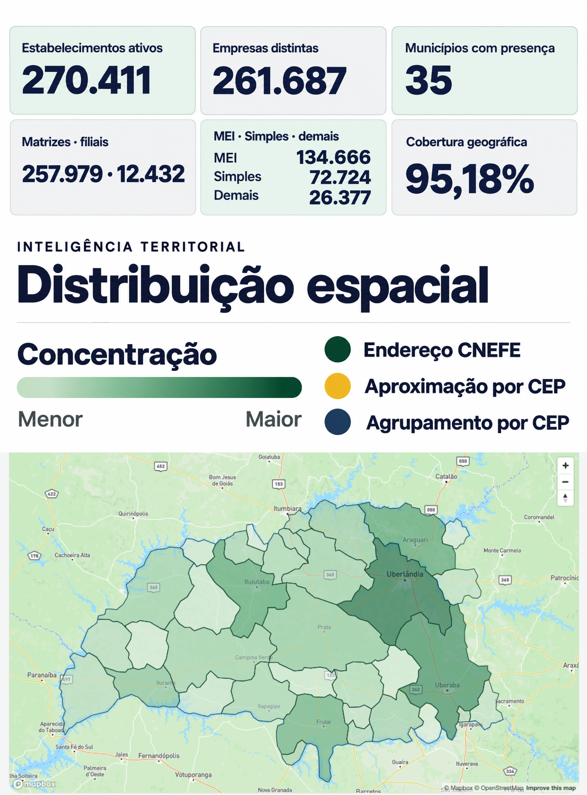
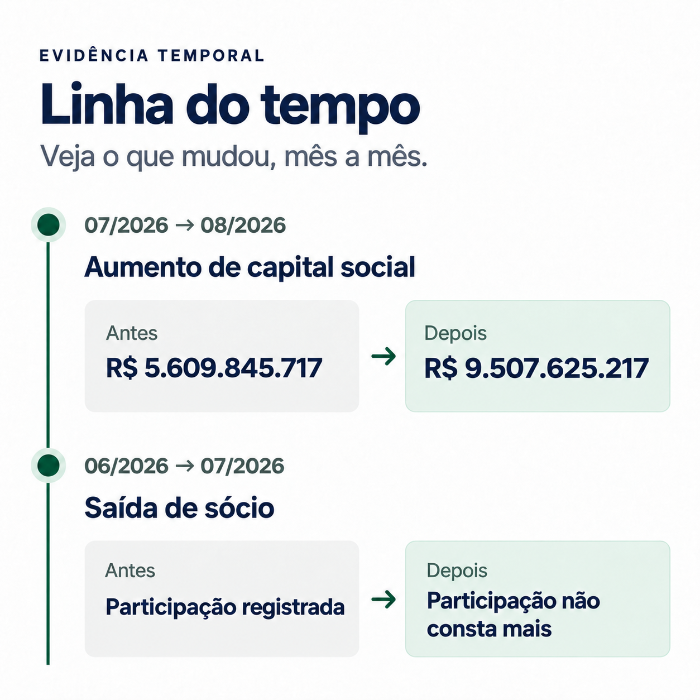
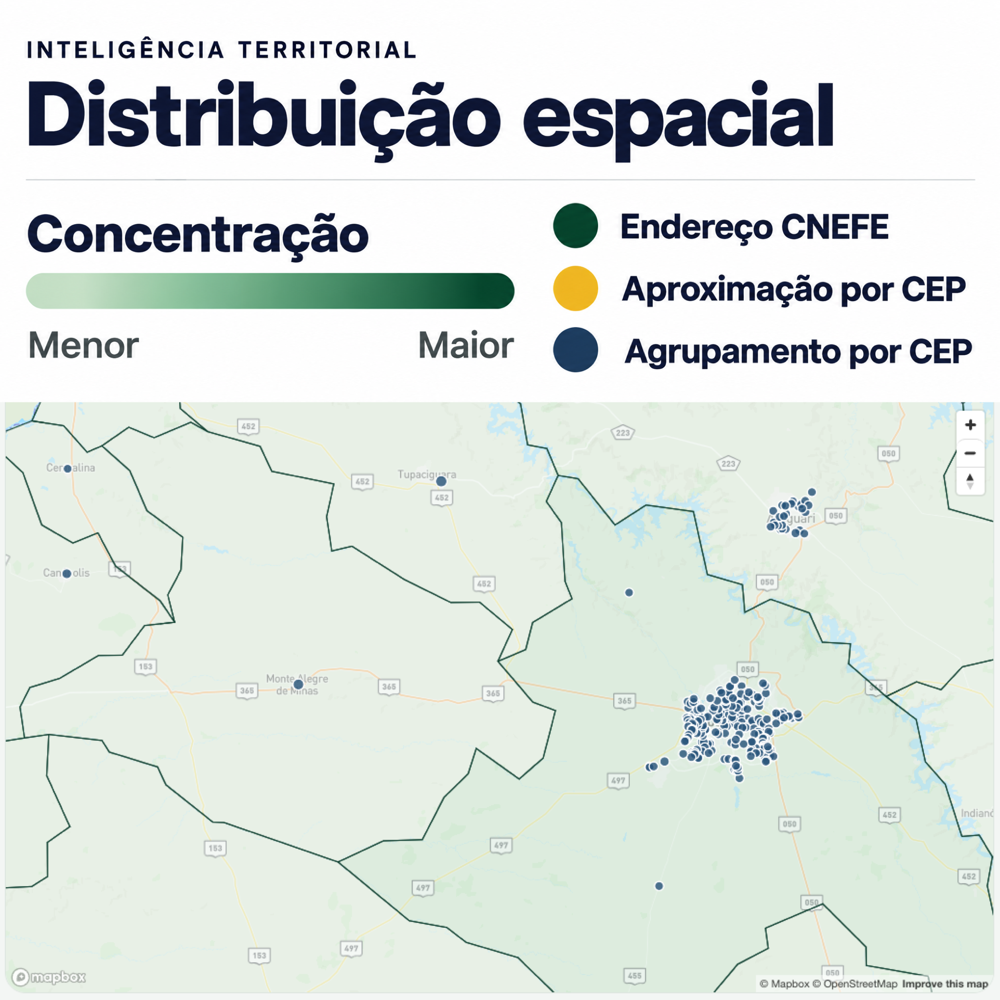

Hoje, sem o Rastro PJ
- Consultas isoladas, uma por CNPJ.
- Conferência manual para descobrir se algo mudou.
- Dificuldade para lembrar valores anteriores ou comparar competências.
- Perguntas sem resposta objetiva: quando mudou, o que mudou, quanto mudou.
Inteligência cadastral regional
Pesquise empresas, consulte alterações cadastrais com antes e depois e explore indicadores e mapas construídos a partir de dados públicos oficiais.

O problema
As consultas convencionais mostram uma fotografia do momento. Acompanhar o que mudou exige guardar competências anteriores e comparar CNPJ por CNPJ, manualmente.
“Eu consigo consultar um fornecedor hoje, mas não consigo acompanhar o que mudou nele nos últimos meses.”
Produto
Seis recursos que trabalham sobre o mesmo recorte regional e sobre o mesmo histórico validado.
Veja o valor anterior, o novo valor e o intervalo em que a alteração foi detectada.
Encontre empresas por CNPJ, razão social ou nome fantasia e refine o recorte.
Acompanhe indicadores, atividades e municípios ao longo da janela histórica.
Explore concentração e dinâmica dos estabelecimentos ativos no mapa.
Mantenha uma lista de organizações relevantes para acompanhamento.
Consulte competência, fonte e critérios de qualidade associados aos resultados.
Como funciona
Quatro etapas separam a publicação mensal do CNPJ e o que aparece na tela do usuário.
Competências mensais da Receita Federal e referências geográficas do IBGE passam por validação.
O sistema identifica mudanças entre fotografias consecutivas.
Alterações, indicadores e localizações ficam disponíveis para pesquisa.
Dashboard, empresa, linha do tempo, mapa e monitoramento trabalham com o mesmo recorte.
Demonstração
Visualize as alterações cadastrais e a distribuição dos estabelecimentos. Clique nas imagens para ampliar.


Casos de uso
Cenários reais do dia a dia de quem precisa acompanhar empresas, sem depoimentos fabricados.
Revisar mudanças cadastrais de clientes que compram a prazo.
Acompanhar fornecedores e consultar alterações relevantes.
Pesquisar empresas e conferir a evolução cadastral registrada.
Entender presença regional por município e atividade.
Contextualizar empresas e setores antes de uma conversa.
Para quem
Pequenas e médias empresas que vendem a prazo ou dependem de fornecedores e parceiros empresariais.
Chamada comercial
Solicite uma demonstração e conte quais empresas, municípios ou atividades você precisa acompanhar.
Canal oficial de contato em definição.
Perguntas frequentes
Não. O Rastro PJ trabalha com competências mensais publicadas nas fontes oficiais.
Nem sempre. Em geral, a plataforma informa que a alteração foi detectada entre duas competências consecutivas. Datas explícitas da fonte são preservadas quando existem.
O recorte atual reúne 35 municípios do Triângulo Mineiro.
Dados abertos do CNPJ publicados pela Receita Federal e referências geográficas e demográficas do IBGE.
Não. O produto organiza histórico e inteligência cadastral; ele não calcula score de crédito ou risco.
Sim. Usuários autenticados podem adicionar e remover empresas da lista de monitoramento.
Não necessariamente. A interface informa se a localização veio de correspondência de endereço, aproximação por CEP ou não pôde ser localizada.
Pelo canal oficial que a equipe definir antes da publicação. Pendência aberta — o destino do botão será atualizado assim que confirmado.